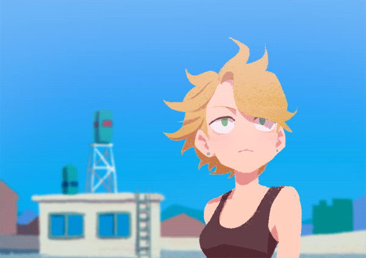

Human Character - основной стиль рисовки персонажей, с небольшими поправками:
• Без текстуры. В данном примере используется кисть с текстрой "мела". В нашем случае используем кисть без текстуры, с полной заливкой.
• С добавлением лайна. На примере отсутвует лайн. В нашем стиле рисовки необходим тонкий, ровный темный лайню.